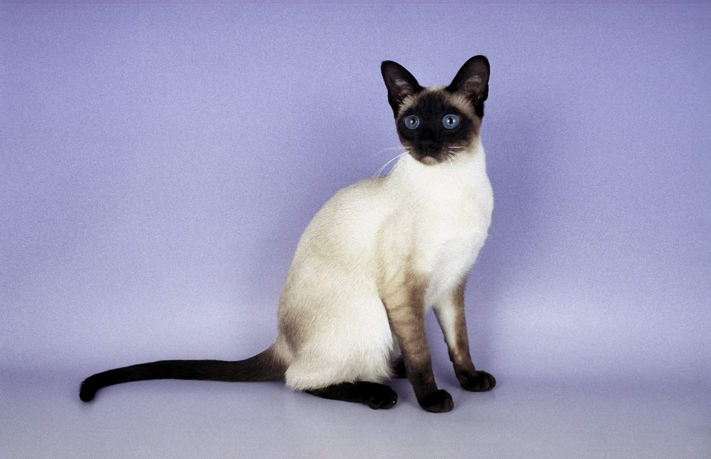

Different breeds of cats have their own personalities and care maintainance. You will have to choose wisely about what kind of cat you will like.
Abyssinian, American Bobtail, American Curl, American Shorthair, American Wirehair, Balinese, Bengal, Birman, Bombay, British Shorthair, Burmese, Burmilla, Chartreux, Chinese Li Hua, Colorpoint Shorthair, Cornish Rex, Cymric, Egyptian Mau, European Burmese, Exotic, Havana Brown, Himalayan, Japanese Bobtail, Javanese, LaPerm, Korat and more.
The most important thing do before you get any pet is to make sure the pet with fit in with your particular lifestyle.
Kitten or adult cat?
Kittens are adorable, curious, playful and full of energy. They can also be exasperating at times, demanding lots of supervision and patience to keep them out of trouble. And a kitten is an unknown entity—you really don't know what kind of cat you'll end up with once they outgrow their kitten personality.
Adult cats are usually calmer, less bouncy, and less mischievous. With an adult, what you see is usually what you get, so if you are looking for specific qualities, consider cats that are a year and older. Read more about adopting a mature pet
Family matters
When choosing a cat, keep your family in mind. Kittens and very young children usually don't mix well, as kittens can be fragile and youngsters kind of rough. Babies and toddlers tend to grab the closest part of a cat, be it tail, ear, or fur, and they can't resist giving the cat a great big hug. Always supervise any interaction between your youngster and your cat.
Personality
Cats, like people, are individuals. No two are exactly alike, whether they're from the same breed or even the same litter.
Some cats are very mellow and will tolerate any kind of handling. These cats are perfect for young kids or older people who want and appreciate this type of cat.
Other cats don't like being picked up or held and will only come to you for petting when they feel like it. Cats also have varying degrees of energy: some prefer to nap all day, while others are constantly on the go.
Personality can vary widely by breed, too. If you decide you want a purebred, do your homework so you end up with one that's right for you. Persians, for example, are typically laid-back and sedentary, while Bengals and other "exotic" breeds (created with wild cat genes) tend to be extremely active. Siamese have the reputation of being very talkative.
Short fur or long?
This is mainly a matter of preference and your willingness to devote time to regular grooming. Long-haired cats require frequent grooming sessions to prevent matting. Not all cats enjoy being brushed, though, and you could wind up having to take your long-hair to a groomer to be shaved down.
Short-haired cats don't require as much brushing, but it does help to remove loose fur, stimulate the skin, and distribute oils through the coat. A cat who likes being groomed will come running when they see the brush.
Purebred or mixed breed?
There are far fewer cat breeds than dog breeds. Most dog breeds evolved from the type of work they were meant to do. Cat breeds were developed mostly for companionship, so there are fewer personality differences between cat breeds.
If you have your heart set on a specific breed, make sure you research that breed thoroughly as well as the breeder (if you choose to buy a purebred). Some breeds are prone to certain medical problems, and there are many breeders who aren’t careful about their breeding programs, resulting in injured or traumatized cats.
In general, mixed breed cats tend to be healthier, since their gene pools are much more diverse.